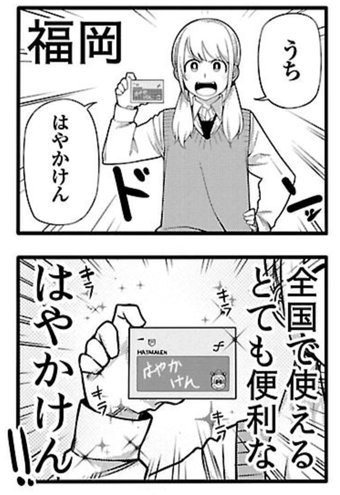

最近買ったマンガ
公開日：
『博多弁の女の子はかわいいと思いませんか？』
")
博多弁の女の子はかわいいと思いませんか？ １ (チャンピオンREDコミックス)
- 作者: 新島秋一
- 出版社/メーカー: 秋田書店
- 発売日: 2016/11/18
- メディア: Kindle版
- この商品を含むブログ (1件) を見る
かわいいと思います（迫真 まぁ、方言の女の子はどこの子でもかわいいよねー。あれ、なんでだろうねー。京都から東京へでてから初めて関西に帰ったとき、コンビニのお姉さんの関西弁がほんと暖かくて可愛らしくて、危うく恋に落ちそうになったの思い出すわ。東京があかんってわけじゃないけど、あっちのヒトって割りとハキハキしゃべるからね。まぁ、うちのオカン（江戸っ子）がそれなんだけど。父ちゃん（九州）とうまくいかないのも、実はそれなんじゃないか。

愛媛バージョンも作ってほしいけど、伊予鉄の IC カードではこのネタができへんぞ……orz
Web でもタダで読めるっぽいので、気になるヒトは覗いてみてもいいんじゃないかな。
『中間管理録トネガワ』
")
- 作者: 萩原天晴,福本伸行,橋本智広,三好智樹
- 出版社/メーカー: 講談社
- 発売日: 2016/08/05
- メディア: Kindle版
- この商品を含むブログ (1件) を見る
『カイジ』に登場する“利根川”の苦悩を描いた作品。Twitter でみかけてビール吹いてしまったので、カッなってまとめ買いした。後悔はしていない。そういえば『博多弁の……』もキッカケは Twitter だっけ。やっぱちみんなが面白いって話題にしてるときになっちゃうよな。その逆もあるけど……（個人的には『シン・ゴジラ』とか？）
あとこのマンガ、読んでる間ずっと『カイジ』の中のヒトが描いてるとばっかり思っていたんだけど、実はスピンオフなんだな？ すげぇ、ちゃんと作者を確認するまで全然気づかなかったよ。もともとそういうことには鈍い方だけどさ……それだけクオリティが高い。ギャグなんだけど、本家と雰囲気が付かず離れずって感じで。
ちなみに『カイジ』は漫画喫茶で読んだだけで、持ってない。スピンオフの方だけ買ってるなんて、不敬っ！――悪魔的不敬っ！！